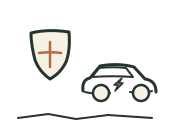
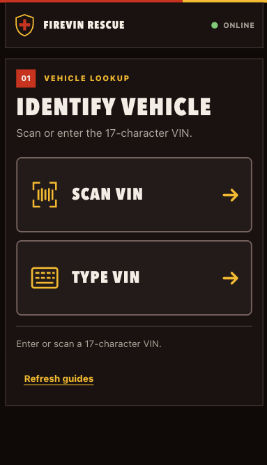
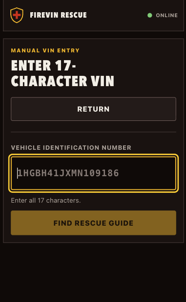
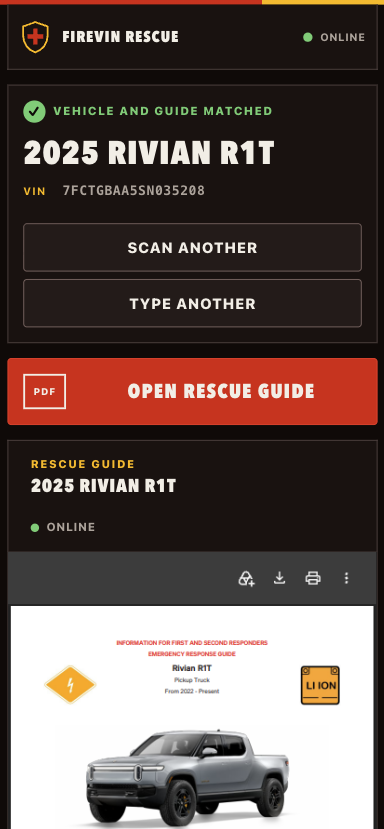

FireVIN Rescue
A free reference for first responders at an electric-vehicle crash. Scan the VIN, get the vehicle, open the guide that shows where the high-voltage battery and cables run and where it’s safe to cut.
Free, no account. Install it on the rig’s tablet or your phone and the guides stay available without signal.

Why it exists
Crews have good extrication references for conventional cars and almost nothing free and fast for electric ones. An EV changes where you can cut: high-voltage cables run through sills and under seats, and the battery sits where you used to have clear floor. FireVIN Rescue puts the manufacturer’s emergency response guide one scan away, on the tool you already have in your pocket.
How it works
Three screens between the wreck and the guide.
Scan the VIN or type it.
Point the camera at the VIN plate on the dash or door jamb. If the plate is damaged or the light is bad, type the 17 characters instead. Either way takes seconds.

Check it’s the right car.
The app decodes the VIN and shows the year, make, and model, so you can confirm against the vehicle in front of you before anyone picks up a tool.

Open the guide and cut safely.
One tap opens the manufacturer’s emergency response guide for that exact model: high-voltage components, cut zones, no-cut zones, and how to disable the system. Download it, print it, or keep it on screen.

Getting it on the rig
- Open the app on the rig’s tablet or your phone.
- Add it to the home screen so it launches like any other app.
- Refresh guides once while you have signal. After that they stay available offline.
Free for every crew.
No account, no cost. If your department runs EV calls, put it on the truck.
Guides are the manufacturers’ published emergency response documents; FireVIN Rescue makes them findable, it does not write them. Corrections or a missing model: gmfennema@gmail.com.